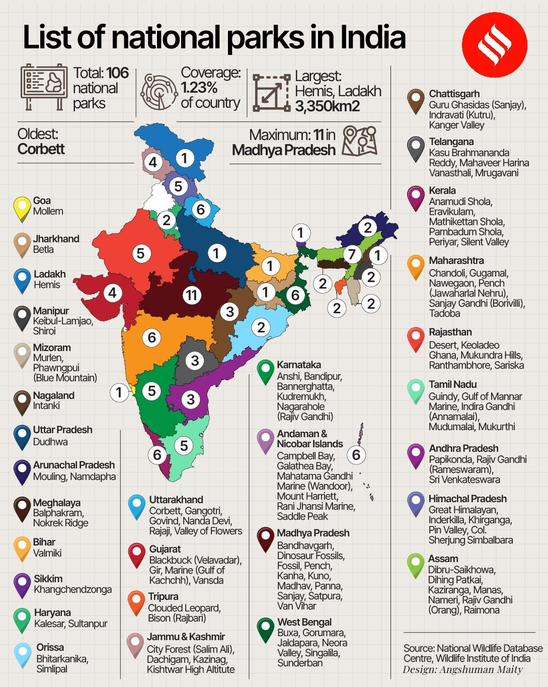

30 National Parks
Geography
•
UPSC, SSC
National Parks In India
National Parks: National parks are designated areas established by the government to preserve the natural environment. Compared to wildlife sanctuaries, national parks have stricter regulations . Their boundaries are clearly defined and fixed. The primary purpose of a national park is to safeguard the area’s natural environment and conserve biodiversity .
Activities Allowed and Prohibited Inside National Parks: Human activities are prohibited within national parks. Grazing of livestock and private land rights are not permitted. Hunting or capturing species listed in the Schedules of the Wildlife Protection Act is strictly forbidden. No individual is allowed to destroy, remove, or exploit wildlife within the park, nor can they harm the habitat of any wild animal or deprive them of their natural habitat. National parks cannot be downgraded to wildlife sanctuaries . Declaration of National Parks: National parks can be declared by both the Central and State governments . The boundaries of a national park cannot be altered unless a resolution is passed by the State Legislature.
Total Number: India has over 106 national parks , with several more proposed, covering approximately 40,500 square kilometers, about 1.23% of the country’s total land area. First National Park: Jim Corbett National Park (Uttarakhand), established in 1936, was the first national park in India, originally named Hailey National Park. Largest National Park: The Hemis National Park in Ladakh is the largest , covering 4,400 square kilometers, known for its snow leopards and high-altitude landscapes. Smallest National Park: South Button Island National Park in the Andaman and Nicobar Islands is the smallest, covering just 0.03 square kilometers, and protecting marine ecosystems and coral reefs. Geographic Diversity: National parks are spread across diverse geographical terrains, from the Himalayas (e.g., Great Himalayan National Park) to the Western Ghats (e.g., Silent Valley), deserts (e.g., Desert National Park, Rajasthan), and tropical islands (e.g., Campbell Bay in the Nicobar Islands).

List of National Parks in India 2024
State/UT
National Park
Year of
Establishment
Specifications
Andaman Nicobar
(6)
Campbell Bay
1992
● Animals: Crab-eating Macaque,
Megapode, Nicobar pigeon,
Andaman wild pig
● Biosphere reserve
Galathea Bay
1992
● Animals: Saltwater crocodiles,
Leatherback turtles,
● Biosphere reserve.
Mahatma Gandhi
Marine
1982
● Animals: Wild Boar, Spotted Deer,
Masked Palm Civet; White-bellied
Sea Eagle, Andaman Teal,
Mount Harriet
1987
● Animals: Asian Elephant, Spotted
Deer, Wild Boar, Andaman Rat;
Andaman Wood Pigeon, Andaman
Cuckoo Dove,
Rani Jhansi
Marine
1996
● Animals: Nicobar Pigeon,
Andaman Water Monitor, Green
Sea Turtle, Hawksbill Turtle,
Andanam Crake,
Saddle Peak
1987
● Animals: Nicobar Pigeon,
Andaman Water Monitor Lizard,
Green SeaTurtle, Hawksbill Turtle,
Andanam Crane.
Andhra Pradesh
(3)
Papikonda
National Park
2008
● Animals: Rusty-spotted Cat, Jungle
Cat, Sloth Bear,Wild Boar, Ratel,
Spotted Deer, Sambar, Barking
Deer,
Sri Venkateswara
National Park
1989
● Animals: Leopard, Indian giant
squirrel, Nilgai
Rajiv Gandhi
(Rameshwaram)
2005
● Animals Barking Deer, Mouse Deer,
Leopard, Jackal, Wild Dog,
Pangolin, Spotted Deer; Paradise
Flycatcher,
Arunachal Pradesh
(2)
Namdapha
1983
● Animals: Snow leopard, Clouded
leopard, Red panda, Sapria
himalayana,
● India-Myanmar-China.
Mouling
1986
● Animals: Tiger, Leopard, Red
Panda, Goral, Himalayan Serow,
Takin,Assamese Macaque, Capped
Langur
Assam
(7)
Kaziranga
1974
● Animals: One-horned Rhinoceros,
Tiger, Wild Bufaflo, Eastern
SwampDeer,
● UNESCO World Heritage Site
● Elephant Reserve
Manas
1990
● Animals: One-horned Rhinoceros,
Asian Elephant, Tiger, Pygmy
Hog,Hispid Hare, Golden Langur,
● UNESCO World Heritage Site
● Elephant Reserve, Tiger reserve,
Biosphere Reserve.
Nameri
1998
● Animals Tiger, Leopard, Clouded
Leopard, Asian Elephant, Gaur,
Sambar,Barking Deer..
● Tiger Reserve
Dibru-Saikhowa
1999
● Animals: Tiger, Elephant, Leopard,
Jungle Cat, Small Indian Civet,
Gangetic Dolphin,
Dihing Patkai
2021
● Animals: Asian elephants, Hoolock
gibbons, Tigers, Leopards, Clouded
leopards, Marbled cats, and
Golden cats
Raimona
2021
● Animals: Asian elephants, Bengal
tigers, Indian gaur (bison),
Clouded leopards, Golden langurs
Rajiv
Gandhi-Orang
1999
● Animals: One-horned Rhinoceros,
Tiger, Asian Elephant, Hog Deer,
Bihar
(1)
Valmiki
1989
● Animals: Tiger, Sloth Bear,
Leopard, Wild Dog, Wild Boar,
BarkingDeer,
Chhattisgarh
Indravati(Kutru)
1982
● Animals: Tiger, Wild Bufaflo,
Spotted Deer, Barking Deer,
Bluebell, Gaur,
(3)
Kanger valley
1982
● Animals: Leopard, Jungle Cat,
Spotted Deer, Barking Deer, Wild
Boar,
Guru Ghasidas
1981
● Animals: Tiger, Leopard, Bluebell,
Chinkara, Sambar, Four-horned
Antelope
Goa
(1)
Mollem
1992
● Animals: Tiger, Leopard, Wild Dog,
Striped Hyena, Sloth Bear,
Gujrat
(4)
Gir
1975
● Animals: Asiatic Lion, Leopard,
Striped Hyena, Spotted Deer.
Vansda
1979
● Animals: Leopard, Striped Hyena,
Rhesus Macaque, Grey Langur,
Giant Squirrel,
Marine(Gulf of
Kutch)
1982
● Animals: Dugong, Jackal, Jungle
Cat, Black-naped Hare.
Blackbuck(Velava
dar)
1976
● Animals: Blackbuck, Blue Bull,
Wolf, Indian Fox, Jackal; Sarus
Crane.
Haryana
(2)
Sultan National
Parkur
1989
● Animals: Bluebell, Blackbuck,
Indian Fox; Bar-headed Goose,
Black-necked Stork,
Kalesar
2003
● Animals: Sambar, Spotted Deer,
Blue Bull, Elephant.
Himachal Pradesh
(5)
Khirganga
2010
● Animals: Leopard, Himalayan
Black Bear, Brown Bear, Himalayan
tahr, Himalayan Goral,
Great Himalayan
1984
● Animals: Blue Sheep, Snow
Leopard, Himalayan Brown Bear,
HimalayanTahr,
● UNESCO World Heritage Site
Pin Valley
1987
● Animals: Snow Leopard, Lbex,
Bharal, Lynx, Marmot, Tibetan
Wolf, Red Fox,
● Cold desert Biosphere
Inderkilla
2010
● Animals: Leopard, Himalayan
Black Bear, Himalayan Brown Bear,
Himalayan Serow,
Simbalbara
2010
● Animals: Leopard, Sambar,
Leopard Cat, Indian Pangolin,
Ghoral,
Jammu Kashmir
(4)
Dachigam
1981
● Animals: Kashmiri Stag, Musk Deer,
Leopard, Himalayan Gray Langur,
LeopardCat,
Kishtwar
1981
● Animals: Himalayan Brown Bear,
Himalayan Black Bear, Musk Deer,
Ibex,
City forest(Salim
ali)
1992
● Animals: Kashmiri Stag, Serow,
Musk Deer, Himalayan Black Bear,
Leopard,
Kazinag
2007
● Animals: Pir Panjal Markhor,
Himalayan Ibex, Himalayan Goral,
Musk Deer,
Jharkhand
(1)
Betla
1986
● Animals: Elephant, Sloth Bear,
Leopard, Wolf, Jackal, Hyaena,
Langur,
Karnataka
(5)
Bannerghatta
1974
● Animals Asian Elephant, Gaur,
Leopard, Jackal, Fox, Sloth Bear,
Indian Gazelle
Bandipur
1974
● Animals: Asian Elephant, Gaur,
Tiger, Sloth Bear,
● Tiger Reserve
Anshi
1987
● Animals: Leopard, Elephant, Tiger,
Gaur, Sloth Bear.
Kudremukh
1987
● Animals: Tiger, Leopard, Wild Dog,
Sloth Bear, Asian Elephant.
Nagarhole(Rajiv
Gandhi)
1988
● Animals: Tiger, Gaur (Bos gaurus),
Asian Elephant (Elephas
MaximusIndicus),
● Tiger Reserve
Kerala
(6)
Eravikulam
1978
● Animals: Nilgiri Tahr, Nilgiri Langur,
Nilgiri Marten, Small-clawed Otter.
Anamudi Shola
2003
● Animals: Asian Elephant, Tiger,
Leopard, Nilgiri Tahr, Gaur,
SpottedDeer.
Periyar
1982
● Animals: Tiger, Gaur, Elephant,
Sambar, Mouse Deer, Barking Deer.
● Tiger Reserve, Elephant Reserve.
Silent Valley
1984
● Animals: Lion-tailed Macaque,
Nilgiri Langur, Malabar Giant
Squirrel
● Biosphere reserve.
Mathikettan Shola
2003
● Animals: Tiger, Leopard, Asian
Elephant, Spotted Deer, NilgiriTahr,
Grizzled Giant Squirrel,
Pambadum Shola
2003
● Animals: Tiger, Leopard, Wild Boar,
Barking Deer, Wild Dog, Asian
Elephant.
Madhya Pradesh
(11)
Bandhavgarh
1968
● Animals: Tiger, Leopard, Sambar,
Barking Deer, Bluebell, Wild Boar,
Gaur;
● Tiger reserve.
Mandla Fossil
1983
● Animals: Tiger, Leopard, Wild Dog,
Gaur, Hyaena, Jackal, Sloth Bear,
Kanha
1955
● Animals: Gaur, Hyaena, Leopard,
Sloth Bear, Tiger, Wild Boar,
WildDog, Largest NP,
● Tiger reserve.
Madhav
1959
● Animals: Chinkara, Spotted Deer,
Bluebell, Sambar, Chausingha,
Blackbuck,
Panna
1981
● Animals: Tiger, Leopard, Wild Dog,
Wolf, Hyaena, Caracal, Sloth Bear,
Pench
1975
● Animals: Tiger, Spotted Deer,
Sambar, Bluebell, Wild Boar,
Sanjay
1981
● Animals Tiger, Indian Leopard,
Spotted Deer, Sambar, Wild Boar,
Satpura
1981
● Animals Tiger, Leopard, Blackbuck,
Leopard, Dhole, Indian Gaur,
Van-Vihar
1979
● Animals Gharial, Star Tortoise;
Tiger, Leopard, Hyaena, Jackal,
Kuno
2018
● Animals Leopard, Jungle Cat, Sloth
Bear, Indian Wolf, Golden Jackal,
StripedHyena,
Dinosaur Fossil
2010
● Animals Chinkara, Spotted Deer,
Bluebell, Sambar, Chausingha,
Maharashtra
(6)
Sanjay Gandhi
1983
● Animals Spotted Deer, Sambar,
Barking Deer, Black-naped Hare,
Navegaon
1975
● Animals Tiger, Leopard, Jungle
Cat, Small Indian Civet, Palm
Civet,
Chandoli
2004
● Animals Tiger, Leopard, Gaur,
Leopard Cat, Sloth Bear, Giant
Squirrel,
Gugamal
1975
● Animals Tiger, Leopard, Sloth Bear,
Dhole, Indian Jackal, Striped
Hyena,
Pench
1975
● Animals Tiger, Sloth Bear, Wolf,
Leopard, Wild Dog, Jackal,
Tadoba
1955
● Animals Tiger, Indian Leopard,
Sloth Bear, Gaur, Bluebell, Dhole,
Manipur
(1)
Sirohi
1982
● Animals Nongin, Tragopan, Bear,
Hoolock Gibbon, Stump tailed
macaque,
Keibul-Lamjao
1977
● Animals Brow-antlered Deer, Hog
Deer, Wild Boar, Large Indian
Civet.
Meghalaya
(2)
Nokrek Ridge
1986
● Animals Red Panda, Asian
Elephant, Hoolock Gibbon, Capped
Langur,
Balphakram
1985
● Animals Asiatic Elephant, Water
Bufaflo, Red Panda, Tiger,
Mizoram
(2)
Phawngpui Blue
Mountain
1992
● Animals Tiger, Leopard, Clouded
Leopard, Himalayan Black Bear,
Murlen
1991
● Animals Tiger, Leopard, Goral,
Serow, Sambar, Barking Deer.
Nagaland
(1)
Intanki
1993
● Animals Tiger, Leopard, Himalayan
Black Bear, Gaur, Sambar,
Odisha
(2)
Simlipal
1980
● Animals Tiger, Leopard, Asian
Elephant, Sambar, Barking Deer,
● Biosphere reserve, Tiger reserve,
Elephant Reserve.
Bhitarkanika
1988
● Animals Wild Boar, Rhesus
Macaque, Spotted Deer, Sambar,
and Leopard.
● Ramsar Site, the Second largest
mangrove ecosystem.
Rajasthan
(5)
Desert
1992
● Animals Desert Fox, Bengal Fox,
Chinkara, Wolf, Desert Cat,
Mukundra Hills/
Darrah
2004
● Animals Tiger, Leopard, Sloth Bear,
Grey Wolf, Chinkara, Spotted Deer,
Ranthambhore
1980
● Animals Tiger, Leopard, Striped
Hyena, Sambar, Spotted Deer,
● Tiger reserve
Keoladeo Ghana
1981
● Animals Golden Jackal, Spotted
Deer, Sambar, Blue Bull, WildCat.
● UNESCO World Heritage Site
Sariska
1992
● Animals Tiger, Leopard, Striped
Hyena, Golden Jackal.
● Tiger reserve
Sikkim
(1)
Khangchendzonga
1977
● Animals Snow Leopard, Asiatic
Black Bear, Barking Deer,
Tamil Nadu
(5)
Guindy
1976
● Animals Blackbuck, Spotted Deer,
Jackal, Pangolin, Bonnet Macaque.
Annamalai/ Indira
Gandhi
1989
● Animals Lion-tailed Macaque,
Nilgiri Langur, Leopard, Giant
Squirrel.
Gulf of Mannar
Marine
1980
● Animals Coral Reefs, Dugong,
Turtles, Dolphins And
Balano-Glossus;
Mudumalai
1990
● Animals: Asian Elephant, Gaur,
Sambar, Spotted Deer, Wild Dog.
● Biosphere reserve, Tiger reserve
and Elephant reserve.
Mukurthi
1990
● Animals: Nilgiri Tahr, Tiger, Asian
Elephant, Sambar, Leopard,
● Biosphere reserve.
Ladakh
(1)
Hemis
1981
● Animals: Snow Leopard, Ibex,
Tibetan Argali, Blue Sheep,
Ladakhi Urial, Tibetan Wolf, Red
Fox,
Telangana
(3)
Mahaveer Harina
Vanasthali
1994
● Animals Blackbuck, Spotted Deer,
Wild Boar, Kindly recheck,
Porcupine,
Kasu Brahamanda
Reddy
1994
● Animals Jungle Cat, Porcupine,
Black-naped Hare; Peafowl,
Mrugavani
1994
● Animals Leopard, Spotted Deer,
Sambar, Porcupine, Wild Boar,
Tripura
(2)
Clouded Leopard
2007
● Animals Mammals: Phayre’s
Langur, Clouded Leopard,
Pig-tailed
Macaque, Leopard Cat, Himalayan
Palm Civet, Crab-eating
Bison/Gaur/Rajba
ri
2007
● Animals Gaur, Barking Deer, Wild
Boar, Clouded Leopard, Jungle
Cat, Hanuman Langur
Uttar Pradesh
(1)
Dudhwa
1977
● Animals Tiger, Indian One-horned
Rhinoceros, Swamp Deer, Asian
Elephant,
Uttarakhand
(6)
Corbett
1936
● Animals Tiger, Asian Elephant,
Leopard, Jungle Cat, Fishing Cat,
Leopard Cat,
● Tiger reserve
Nanda Devi
1982
● Animals Musk Deer, Serow,
Himalayan Tahr, Snow Leopard,
● Biosphere Reserve.
Valley of Flowers
1982
● Animals Himalayan Black Bear,
Red Fox, Himalayan Weasel,
● UNESCO World Heritage Site
Rajaji
1983
● Animals Asian Elephant, Tiger,
Goral, Spotted Deer, Sambar,
BarkingDeer,
● Elephant Reserve
Govind
1990
● Animals Snow Leopard, Asian
Black Bear, Brown Bear, Leopard,
Musk Deer.
Gangotri
1989
● Animals Snow Leopard, Leopard,
Himalaya Black Bear, Brown Bear,
Musk Deer,
West Bengal
(6)
Sunderban
1984
● Animals Tiger, Leopard Cat,
Spotted Deer, Wild Boar, Fox,
Jungle Cat, Flying Fox,
● UNESCO World Heritage Site,
Tiger Reserve, Biosphere
Reserve.
Buxa
1992
● Animals Tiger, Leopard, Fishing
Cat, Leopard Cat, Jungle Cat
Gorumara
1992
● Animals Indian One-horned
Rhinoceros, Gaur, Sloth Bear,
Sambar.
Jaldapara
2014
● Animals Indian One-horned
Rhinoceros, Leopard, Asian
Elephant,
Neora Valley
1986
● Animals Red Panda, Tiger, Asiatic
Black Bear, Barking Deer, Goral,
Leopard,
Singalila
1986
● Animals: Red Panda, Leopard Cat,
Barking Deer, Yellow-throated
marten